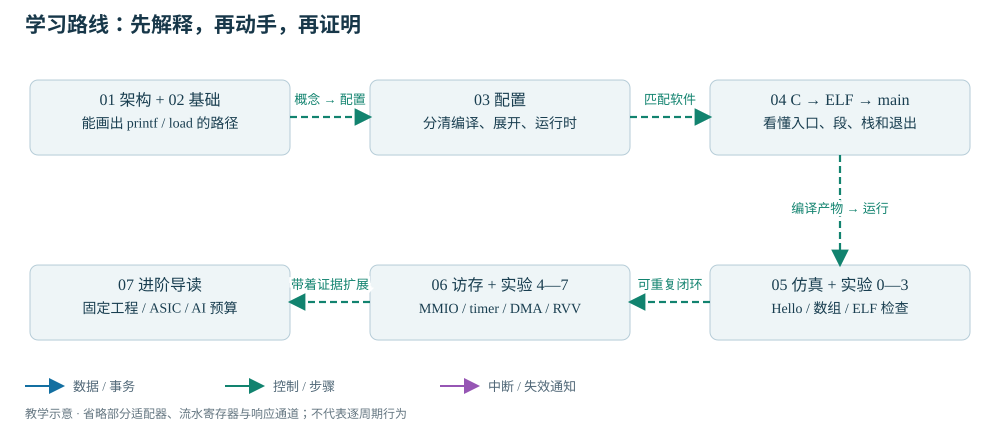

READ · TRACE · BUILD · EXPLAIN
课程结构与学习路线
概念与原理、配置与使用、执行与验证：三条主线组成完整的 SoC 学习路径。
架构原理 · 配置使用 · 执行验证
本教材面向具有 MIPS、RTL 和自定义总线开发经验的工程师，以一个 137 元素数组程序为贯穿示例，依次建立系统概念、配置关系、软件构建、程序加载与运行验证的知识体系。完整 Linux 与依赖管理系统的维护不作为入门前置。
独立修改数组长度或运算式，构建新 ELF，说明每个段放在哪里；在匹配的仿真环境中加载它，检查 UART、结果和退出码；若卡住，指出最早失效的阶段并提供最小日志。
学习主线与阅读顺序
入门主线建立概念并完成 C 程序到仿真结果的基本流程；进阶剖析按设备学习寄存器、驱动与执行验证；硬件主线解释配置展开、互连内部与系统集成。基础概念先在第 01～02 章定义，后两条主线按任务选择阅读，无须先学完全部外设才能学习互连。

| 学习段 | 先读 | 动手成果 |
|---|---|---|
| 第一次：全局与编译 | 01 系统架构 → 02 RISC-V 与 SoC 基础 → 03 硬件与软件配置体系 | 画系统图；执行实验 0，能区分三种编译器 |
| 第二、三次：主线重点 | 04 C 程序的编译、加载与启动 → 实验 1～3 | 自己编译 Hello / 数组，读 ELF 和反汇编，解释栈与 BSS |
| 第四次：在硬件模型中运行 | 05 软件仿真流程与故障定位 | 满足环境条件后运行；保存 compile / elaborate / simulate / UART 证据 |
| 第五、六次：系统交互 | 06 访存、DMA 与 RVV → 实验 4～7 | MMIO 回读、计时、DMA 校验、向量执行证据 |
| 后续导读 | 07 ASIC 迁移与 AI 系统规划 | 列固定基线与回归清单，做容量和带宽预算 |
已完成入门主线后，从进阶路线与支持矩阵开始。重点看完整SoC/时钟复位图、软件到硬件执行、寄存器与驱动和中断/DMA综合案例；429项字段可在离线寄存器索引搜索。进阶证据另行记录。
核心知识与学习任务
C 格式化 → _putchar → UART 状态轮询与 THR 写 → TX 引脚 → VIP 解码。跟踪这条路径。
由地址与缓存命中决定。L1 命中、SPM、MMIO、外部主存不是同一条路径。比较路径。
主机 C++ 解析 PT_LOAD，VIP 通过 JTAG 调试模块系统总线访问写入目标地址。检查装载。
硬件只知道复位地址；栈、全局数据、异常入口与 ABI 环境需要启动代码建立。追踪两段启动。
怎样证明使用了向量指令且计算正确？“ELF 含 RVV 指令”“硬件实际走到这些指令”“逐元素结果与标量期望一致”是三份证据。查看 RVV 门槛。
证据类别与使用边界
本轮实测本机工具查询、教材示例轻量构建及网站检查；具体范围见 证据页。
源码静态确认本地实现及命令入口可追溯，但未因此证明运行正确。
用户历史报告曾在 VCU118 跑通 HelloWorld；不扩大为 Ara、DDR 全功能或 ASIC 就绪。
待验证示例教材的 RTL 编译、展开、加载、运行命令及 DMA/RVV 运行结果。
未来方案独立 cheshire_ara_asic、NPU/ISP/LVDS/AXI4 DDR 与 AI 性能目标，尚未实施。
旧清单是标量 profile，且同时收录 decoder stub 与真实实现。本教材提供独立导出方法；导出通过仍需真实 RTL 编译与展开验收。2026-09-22 入门记录中 Questa 可定位、VCS/vlogan 不在 PATH，许可证未检查；2026-09-23 的独立单元运行记录另见硬件证据，不代表生产 SoC 已通过仿真。
专题参考与源码索引
正文组织概念、原理、流程和验证方法；参数全集与库 API 由专题手册提供。需要细节时看 配置参考手册、软件参考手册和 历史入门分析。Markdown 链接可在 IDE 阅读；本网站的完整学习主线无需 Markdown 渲染器或联网。
源码链接指向同一仓库；完整搬迁仓库后仍可使用。只复制 learning/ 也能离线看教材与图，但无法打开原始源码链接。基准、维护和再生成方法见 README。